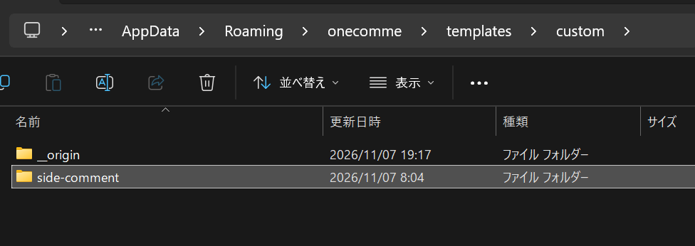
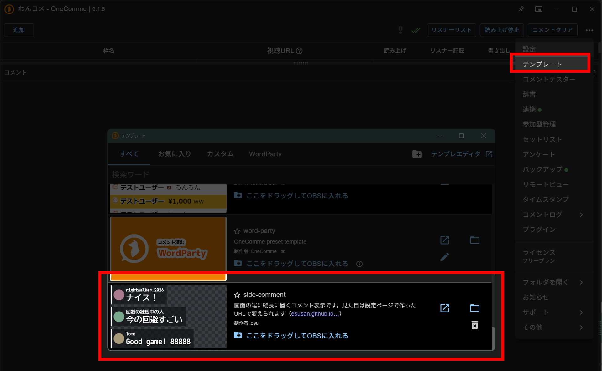

side-comment
わんコメ用のコメント表示テンプレートです。画面の端に縦長に置いて、アイコンとコメントを表示します。ここで見た目を決めると、OBSに貼るURLができます。
見た目を決める
OBSのブラウザソースに貼ってあるURLをここに貼ると、そのときの設定が下に読み込まれます。初めての方は空のままで大丈夫です。
使い方
-
テンプレートをダウンロードして展開します。最初に1回だけで大丈夫です。
-
中の
side-commentフォルダを%APPDATA%\onecomme\templates\custom\に入れます（エクスプローラーのアドレス欄にこのパスを貼ると開けます）。
-
わんコメのテンプレート画面（右上の「…」メニュー →「テンプレート」）に side-comment が出ていればOKです（わんコメが認識できているかの確認だけです）。出ていなければ、わんコメを起動し直してください。

-
OBSにブラウザソースを追加し、「ローカルファイル」のチェックを外したまま、URLにこれを貼ります。上で選んだ見た目の設定がURLの末尾に入っています。
コピーしましたわんコメのポートを11180から変えている場合は、URLの数字をご自分のものに書き換えてください。
-
同じ画面で、ブラウザソースの幅を にします。
この幅は、上で選んだ文字の大きさ・1行の文字数・アイコンの有無から計算しています。設定を変えると幅も変わるので、そのときはここの数字に合わせ直してください。
-
続けて、ブラウザソースの高さを決めます。このテンプレートには高さの設定がなく、ブラウザソースの高さがそのままコメントを表示する範囲になります。
コメントは下から上へ積み上がり、入りきらない古いコメントは上の端で消えます。高くするほど、たくさんのコメントが残ります。目安として、高さ700pxなら1行のコメントがおよそ 入ります。
- ブラウザソースを画面の端に寄せて置きます。新しいコメントはソースの下端に出るので、下端をコメントを出したい位置に合わせてください。
- 配信の前に、わんコメのコメントテスター（右上の「…」メニュー →「コメントテスター」）でコメントを流して、OBSでの表示を確かめておくのがおすすめです。長いコメントや長い名前も試すと、幅や省略のされ方が分かります。
見た目を変えたくなったら、今OBSに貼ってあるURLを「OBSに貼ってあるURLから続ける」の欄に貼ると、前の設定から選び直せます。選び直したら4のURLを貼り直します。文字の大きさ・1行の文字数・アイコンを変えたときは、5の幅も変えてください。わんコメのテンプレート画面からOBSへドラッグしても動きますが、その場合はURLの設定が付かず、ダウンロードしたときの設定で表示されます。
コメントが出ないとき
- 赤い枠で「コメントを受け取れません」と表示される
- side-comment フォルダが
%APPDATA%\onecomme\templates\custom\の外にあります。そこに入れて、URLで開き直してください。 - 見た目が変わらない
- ブラウザソースが「ローカルファイル」指定になっている（わんコメからドラッグして入れるとこうなります）と、URLの設定は付きません。チェックを外して、URLを貼ってください。URLを貼り直しても変わらないときは、ソースのプロパティで「現在のページのキャッシュを更新」を押してください。
- わんコメには流れるのに、OBSに出ない
- わんコメの配信枠の「書き出し」がオフになっていないか確認してください。オフの枠のコメントはテンプレートに送られません。わんコメのコメントテスターは枠に属さないため、書き出しがオフでも表示されます。テスターでは出るのに配信のコメントが出ないときは、まずここを確認してください。
- 限定公開の配信でテストしている
- わんコメは限定公開の配信のコメントを取得できません。テストは公開の配信で行ってください。
- 前の配信のコメントが出ない
- 前の配信の分が残らないように、OBSで読み込んだ時点から1時間より前のコメントは表示しないようにしています。
- スパチャやギフトが出ない
- 本文のないもの（金額だけのスパチャなど）は表示しません。本文があれば表示されます。
ご利用について
配信や動画で使うときに許可は不要です。ご自由にお使いください。
必須ではありませんが、概要欄などでこのページを紹介してもらえると嬉しいです。